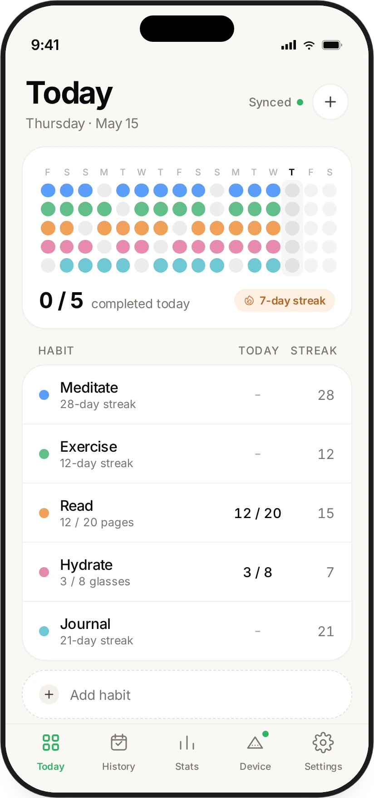
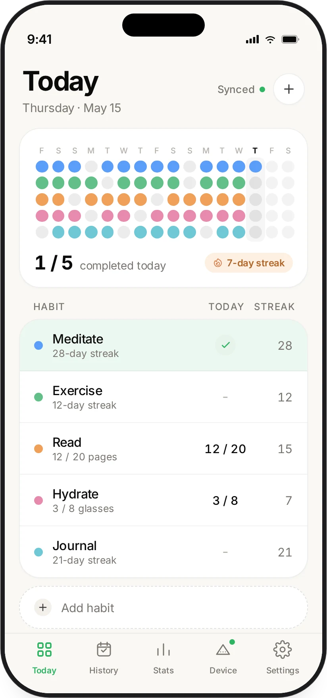
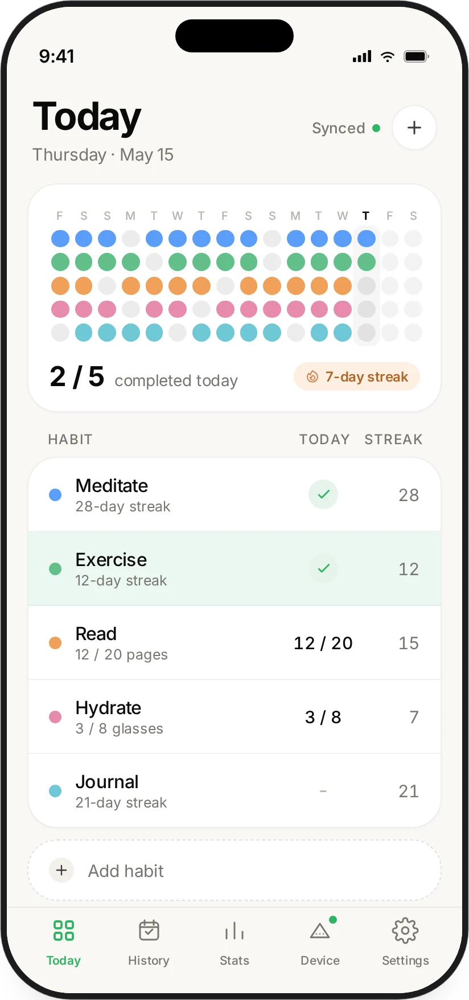
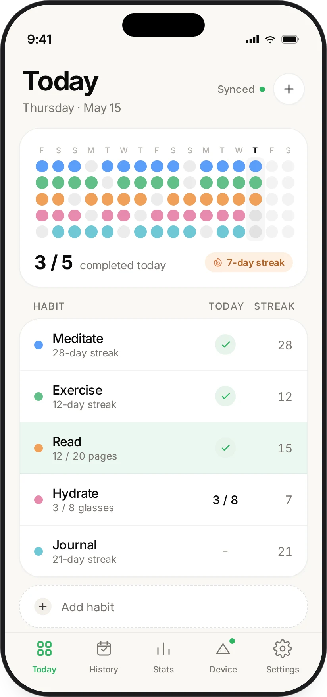
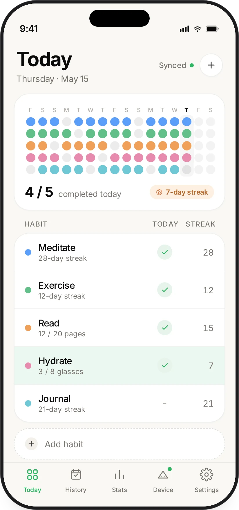
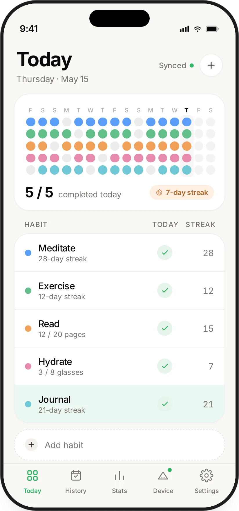
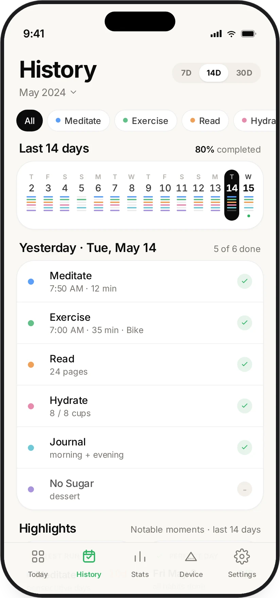
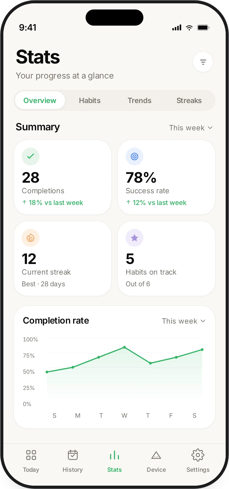

Today
Check in with a tap, watch streaks grow and see sixteen days at once.
Ritlum mini · First batch of ten
A small desk display that turns your last eight days into light, so you can see how you’re doing without picking up your phone.
The grid, decoded
Each light is a day you showed up. One look tells you what’s on track and what’s slipping.
From a small action to a little light
Log a habit in the Ritlum app and the light appears on mini a moment later, then stays in view long after you’ve put your phone down.








Watch today’s column fill, one habit at a time.
A physical way to finish
Stick an NFC tag on something you already use: the kettle, your running shoes, the book on your nightstand. Tap it with your iPhone to log the habit, and mini lights up. Five tags come in the box.
Morning to midnight
Mini fits the rhythm of your day. Show your habits or the time, turn it down for the evening, and let it switch itself off while you sleep.


The Ritlum app
Mini mirrors the Ritlum app for iPhone, where you plan, log and look back on your habits. Every habit is saved in the app, so mini can stay simple.

Check in with a tap, watch streaks grow and see sixteen days at once.
Month and week calendars, filtered to one habit or all of them.

Completion rates, best streaks and weekly trends for every habit.

Choose which habits appear on mini and drag them into order, or match your Home screen.
Complete once, count toward a target like eight glasses, or time a session.
Today’s progress, one glance away on your phone too.
Gentle nudges on the days you choose, with the option to stop once today’s goal is met.
Sign in with Apple and your habits, check-ins and mini pairing follow you to every device you sign in on.
Connected without the cloud
Mini talks directly to the Ritlum app on your iPhone. It doesn’t need its own account, Wi-Fi network or cloud service to do its job.
Habit history, colours, brightness, clock mode and the sleep schedule go straight from your iPhone to mini.
Your last display and settings are stored on mini. Unplug it, plug it back in, and it picks up where it left off.
When new firmware is out, the app downloads it and installs it on mini over Bluetooth.
No microphone, no camera, no Wi-Fi. Mini only knows what the app tells it about your habits.
Three finishes
Each case is 3D printed in matte PLA and assembled by hand, so every unit keeps a little of its own character. Pick the one that suits your desk.


Setup
Connect USB-C. Mini says hello with a sweep of colour across its middle rows.
Open the Device tab in Ritlum with your iPhone nearby. Mini blinks a row so you know you’ve found the right one.
Pick up to eight habits. Your last eight days appear straight away, and every check-in after that shows up on its own.
Tech specs
The first run is intentionally small: ten cases, printed and assembled by hand in Germany.
Questions
No. Mini connects to the Ritlum app on your iPhone over Bluetooth. It has no Wi-Fi and no account of its own.
Mini keeps showing your habits. Your display and settings are stored on the device, and the sleep schedule keeps running. New check-ins appear the next time your iPhone is in range.
It comes back to the same habit view, brightness and sleep schedule when you plug it in again. The clock is set again automatically the next time the app connects.
Mini is set up and updated through the Ritlum app, which is available for iPhone.
Up to eight, one per row, across your last eight days with today on the right. You choose which habits appear and in what order.
No. Mini works with the free Ritlum app. Pairing, the habit grid, clock mode, brightness, the sleep schedule and firmware updates are all included.
Five come in the box, but they’re optional. Tap one with your iPhone to log a habit, or check in from the app or the widget as usual.
It is. In the app’s Device tab, tap the tracker’s status line five times and mini turns into a tiny game of Snake, played on its 64 lights.